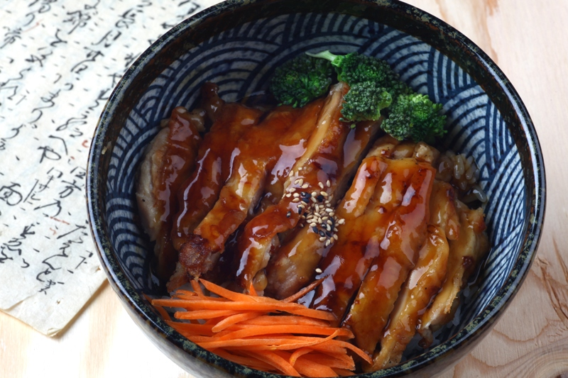

Chicken Teriyaki Donburi

Description
Chicken Teriyaki Donburi combines the perfect blend when it comes to
sweet and savoury.
Skin on, bone out chicken thigh is carefully coated
in spices and flour to be deep fried and achieve that crispy outer layer.
A fresh bowl of steamed rice is placed as a bed for the chicken.
Finally, the sweet and tangy teriyaki sauce is drizzled on top, coating
the chicken and the rice.
Ingredients
- 4oz uncooked skin on chicken thighs
- 1.5 cups of uncooked Rice
- 1.25 cups of your choice teriyaki sauce
- Vegetables for garnish
Steps
- Wash and cook the rice. (As this is the longest step)
- Season the chicken thighs and cover in all-purpose flour.
- Deep fry/Airfry/Bake the chicken thighs to desired color.
- Steam vegetables until fully cooked.
- Let everything rest 5mins after cooking.
- ENJOY!
Odin Recipes